We are given the following image of a cameraman.

We convolve the image to obtain iamges corresponding to the partial derivates of each difference kernel dx = [[1, -1]] and dy = [[1], [-1]] and then found the combined gradient as in the spec, which we then binarized with threshold = np.mean(gradient_magnitude) + 1.5 * np.std(gradient_magnitude).
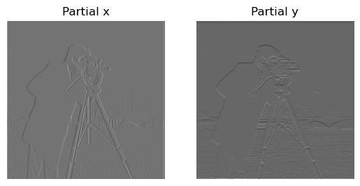 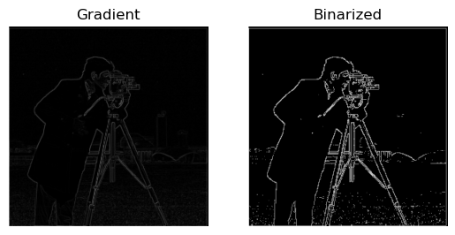In this part we blur the images using a gaussian filter to ensure smoothness, using kernel_size = 12 and sigma = 2.
This first image is the original image blurred.
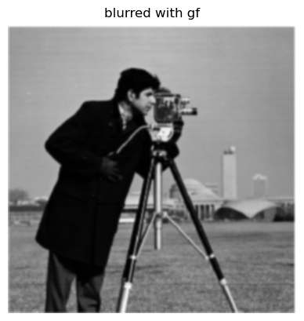We then have the blurred partial derivates with respect to the finite difference kernels.


We can do this on the combined gradient magnitude as well.
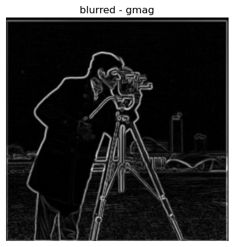And finally on the binarized version.
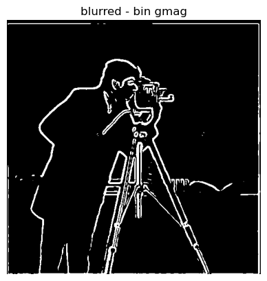In this part of the project we consider the sharpening of images using the unsharp masking technique, in which we simply subtract a low-frequency version of the image, obtained using a Gaussian filter, from the orignal image to obtain a high-frequency image. The following results were obtained using alpha=0.75.

For this next image I blurred the original image, and then resharpened to test the effectiveness of the sharpening. We see that while much of the sharpness of the beak has been recovered, the sharpness of the color boundary between white and black on the bird remains a little hazy.
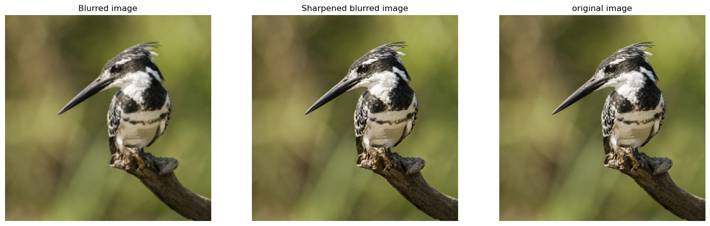Now we are combining images to obtain hybrid images where a lower-frequency image is overlaid onto a high-frequency image which have both been created using convolving with Gaussian filters as before. To do this, we first align the images and then isolate the high frequencies of one image and the low frequencies of another which are then combined to create the hybrid image where at different distances certain parts of the image will become more clear.
For the given example of a person and a cat, we have the following combination.
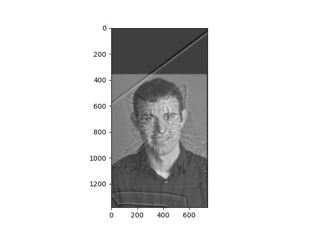Here is an example with Jeff Bezos and a sheep. From afar only the sheep is visible but closer to the screen we see Bezos is still present.
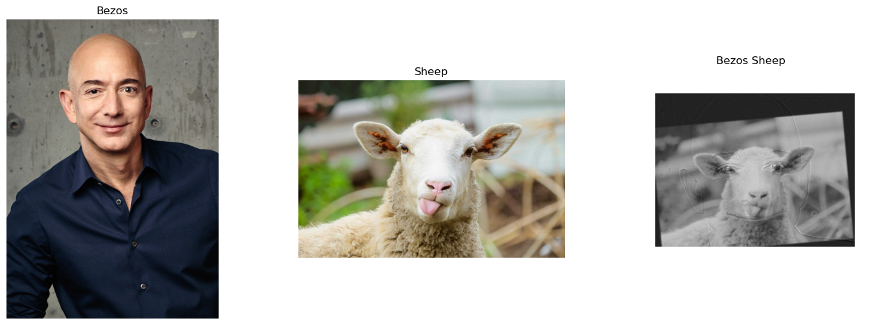Frequencies
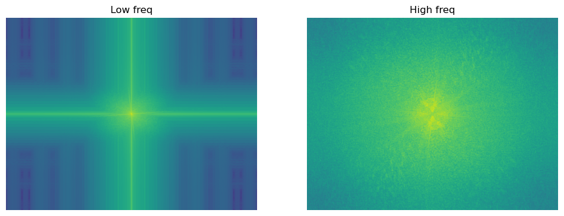 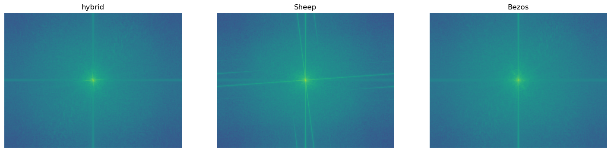Laplacians for apple
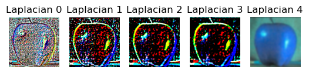Laplacians for orange
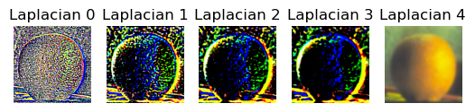